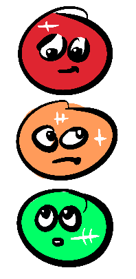

~ the real reason you stop at a red ~
You're driving toward a busy intersection incanting "stay green, stay green, stay green"•••
alas the light capriciously switches to amber••• then red•
You capitulate and halt• But why?
I'd like to argue you're following a strategy that is part of an equilibrium first identified by Game Theorist and Nobel Laureate John Nash• Yes that guy Russel Crowe played in A Beautiful Mind•
A Nash Equilibrium is a situation in game theory where a system, comprised of rational agents, acting independently, self-balances when there is no incentive for any player to unilaterally change their strategy, given the strategies of the other players•
Now, while the traffic light system isn't a purely self-balancing equilibrium • given it is undergirded by laws, it's important to ask the question 'Is it fear of the law that stops someone running a red?'•
I would contend rather that it is the fear of screeching brakes, loud metallic impacts, the mangling of automotive bodywork, snapping of bones, rupturing of internal organs, the pain of muscle tissue rent asunder, and the howls of terror and agony that one imagines might accompany a car crash•
Correspondingly, it is the understanding that other drivers also have an interest in self-preservation that gives us the security to drive through a green light without a care in the world•
And similarly no driver has an incentive to deviate from the related strategy of driving on the designated side of the road given the identical strategy of the other drivers• I mean, if the law to drive on one side of the road was overturned, would you start driving on the other side tomorrow?• Deviation from these shared strategies carries immediate risks for the individual and the collective, making it a clear negative-sum game• Whereas maintaining the strategy is positive-sum in the short term and enables the trust necessary for driving to be feasible at all in the long-term•
There are other examples of Nash Equilibria that don't involve laws, such as oligopolies that cooperate to keep prices high, or where people naturally form queues while waiting, due to social conventions• But ultimately these still adhere to coordinated "laws", whether an informal agreement or custom, that can be enforced in one way or another• The "laws" are just less clear-cut which muddies the example somewhat•
What I like about the traffic light example is that it's easy to delineate the actual self-interested motivations for each individual's behaviour from the legal motivations, and when we do so, we are also delineating the difference between a bottom-up Nash Equilibrium and a purely top-down legal authority• This helps us to not only understand what a Nash Equilibrium is but also what it is not•
